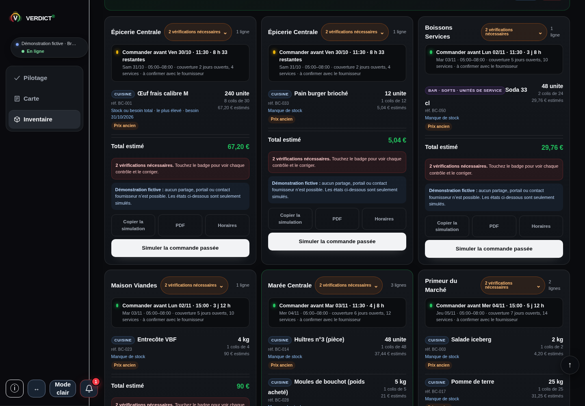

Le besoin retenu.
Verdict retient le plus élevé entre le manque de stock et le besoin total renseigné. Il ne les additionne pas.
Verdict, un instrument de décision
Reliez vos ventes, vos charges, votre carte et vos stocks pour voir ce qui explique vos chiffres — et préparer la prochaine décision.
Partir du terrain
Choisissez la question qui vous ressemble. Découvrez ce que Verdict relie, ce que cela permet de lire et par où commencer.
Choisissez une question pour découvrir les données à vérifier, la méthode et les fonctions associées.
Dans Verdict / Activité
Pilotage rapproche vos ventes, les charges renseignées et le calendrier. Retrouvez le réalisé, le minimum du mois et la projection dans une même lecture.
Découvrir PilotageÀ vérifier. Vos journées et vos charges couvrent-elles la même période ?
À réunir. Ventes renseignées, charges retenues et calendrier d’ouverture.
Une projection n’est pas un bénéfice acquis.
Dans Verdict / Matière
La clôture matière relie la consommation mesurée au théorique et aux éléments à vérifier. Retrouvez les données derrière l’écart avant de chercher ce qui l’explique.
Découvrir les fonctions ProÀ vérifier. Les comptages, les unités et les dates sont-ils comparables ?
À réunir. Stocks de début et de fin, entrées nettes, unités, prix ; recettes et ventes pour le théorique.
Un écart est une piste de vérification, pas une cause démontrée.
Dans Verdict / Carte & prix
Carte met en relation vos recettes, vos prix et vos volumes. Examinez ce que chaque plat apporte, puis ce que l’ensemble des ventes contribue à couvrir.
Découvrir CarteÀ vérifier. Vos portions, rendements et prix d’achat sont-ils à jour ?
À réunir. Prix, coûts, portions, rendements, ventes et hypothèses retenues.
La contribution n’est pas le bénéfice de l’établissement.
Dans Verdict / Équipe & services
La lecture équipe et services rapproche activité, heures et coûts retenus. Préparez une décision d’organisation à partir de vos propres services et de leur contexte.
Découvrir les fonctions ProÀ vérifier. Comparez-vous le même service avec les mêmes données ?
À réunir. Activité datée, heures, coûts du périmètre et contexte du service.
Cette lecture ne constitue ni une paie ni une validation RH.
Dans Verdict / Stocks & achats
Inventaire rassemble comptages, réceptions et préparation des besoins. Retrouvez vos unités, vos fournisseurs et vos conditionnements pour relire une commande avant de la passer.
Voir un besoin à vérifier dans VerdictÀ vérifier. Le stock affiché correspond-il au stock réellement utilisable ?
À réunir. Stock utilisable, objectifs, unités, colis, délais et fournisseur.
Une préparation n’est pas une commande automatiquement transmise.
Dans Verdict / Trésorerie
La projection sur treize semaines met en regard vos hypothèses d’encaissement et de paiement. Repérez les passages à examiner et revenez aux hypothèses qui les expliquent.
Découvrir les fonctions ProÀ vérifier. Les paiements sont-ils placés à leur date prévue ?
À réunir. Solde de départ, encaissements et décaissements datés, hypothèses explicites.
Une projection renseignée, pas une banque connectée.
Une question, un écran réel
Voici la préparation de commande dans la démonstration intégrée à Verdict. La quantité seule ne suffit pas : le conditionnement, le prix et les contrôles restent à examiner.

Application Verdict · version consolidée du 14 octobre 2026 · démonstration fictive Brasserie Collet, capturée le 30 octobre. Prix anciens et deux vérifications nécessaires sur les cartes : aucune commande transmise. Les délais affichés sont ceux de la capture.
Agrandir l’écranVerdict retient le plus élevé entre le manque de stock et le besoin total renseigné. Il ne les additionne pas.
Dans cette démonstration, le besoin de 240 unités est présenté en huit colis de 30. L’unité et le colis se lisent ensemble.
« Prix ancien » et « 2 vérifications nécessaires » invitent à relire la préparation. L’écran ne démontre ni prix actuel ni commande transmise.
De la donnée au choix
Le choix ou l’écart que vous voulez comprendre.
Une période, des unités et un périmètre cohérents.
Le réalisé, l’estimation et les hypothèses restent distincts.
La prochaine vérification, avant de décider.
Saisonnier : comptez les charges conservées pendant la fermeture. Plusieurs canaux : distinguez leurs coûts propres. Plusieurs activités : explicitez la répartition des moyens partagés. Votre cuisine ne fixe pas à elle seule un ratio.
Explorer les formats d’exploitationCe que Verdict rassemble
Une recette modifiée change la matière. Un service différent change l’organisation. Une échéance change la trésorerie. Retrouvez les liens entre vos données, vos calculs et vos hypothèses.
Reliez votre activité aux repères de la période.
Voir PilotageRetrouvez ce qui compose la contribution des plats.
Voir CarteDu disponible aux besoins par fournisseur et colis.
Voir InventaireLa présentation de Pro détaille aussi la matière, les services, les simulations et la projection de trésorerie, avec les données nécessaires et les conditions de chaque lecture.
Voir les fonctions et les écransUne origine métier
Chef de cuisine à l’île de Ré, Steven PAPY a commencé Verdict dans Excel le 20 novembre 2025 pour comprendre sa propre activité.
Les premiers retours venaient de collègues de travail et de patrons. Le passage en application a d’abord été une expérience personnelle, sans projet commercial initial. Les premiers essais ont commencé fin juillet 2026.
Deux modèles personnels du fondateur.
Des prévisionnels et des simulations, pas des résultats clients.La prochaine lecture vous appartient
Explorez les fonctions et leurs écrans réels, puis choisissez le parcours qui correspond à vos données et à votre décision.
Voir les fonctions et les écrans